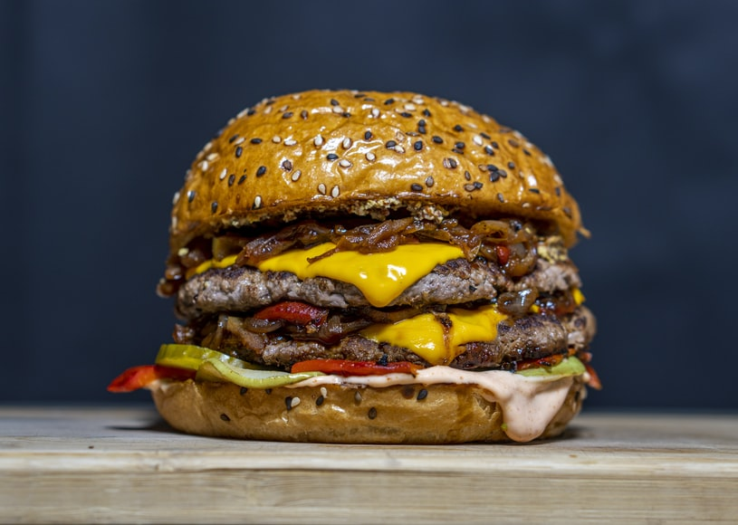

Home
Bacon Cheeseburger

Description
This takes a little more effort than the average
cheeseburger, but is well worth it! Serve on buns
with your favorite condiments.
Ingredients
- 1 pound sliced bacon
- 5 pounds ground beef
- 1 large onion, chopped
- 1/4 cup Worcestershire sauce
- salt and pepper to taste
- 1 pound cheddar cheese, sliced
Steps
- Preheat grill to high heat
- Fry bacon in a large skillet over high heat,
flipping occasionally, until almost done.
- Add onion and continue cooking until bacon is crisp
and onion is tender.
- Remove bacon and onion from pan with a slotted
spoon and transfer to a food processor. Pulse a
few times to chop finely (do not puree).
- Pour into a large bowl. Using your hands, mix with
ground beef and Worcestershire sauce.
- Form into patties and grill for 5 minutes each side. Top
with cheese for the last minute on the grill.